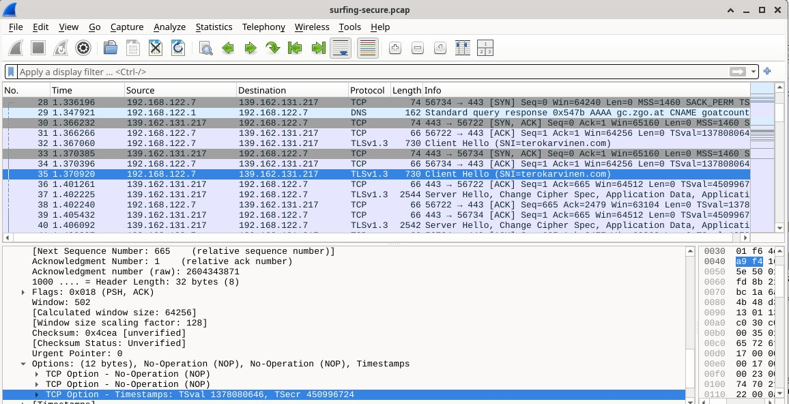

x
Karvinen 2025: Wireshark - Getting Started:
Tekstissä käytiin läpi kuinka wireshark asennetaan Linuxille. Hyödynsin tätä ohjetta asentaessani sen omalle koneelleni.
$ sudo apt-get update
$ sudo apt-get install wireshark
Network Interfaces
Teksti valaisee "network card" käsitteitä, kuten "wlp4", "enp1s0", "en", "wl" ja "lo".
Linux koneissa nimeäminen tapahtuu systemd:n kautta.
Omat interfacet voi tarkistaa komennoilla:
$ ip a
$ ip route
a
Linuxin distro 13 "Trixie" toimii moitteetta, ei raportoitavaa.
b
Yhteys päällä:

Yhteys on pois päältä:

Wireshark asennettu, kaapattu pieni pätkä omaa liikennettä:

Link layer:ssä on näkyvillä "Destination" ja "Source". Tämä kerros vastaa paketinsiirrosta.
Internet layer vastaa reitittämisestä ja osoitteista, sisältäen protokollan, source id:n ja destination id:n.
Transmission control layer kertoo source portin ja destionation portin, vastaten yhteyden luotettavuudesta ja sen luomisesta.
Viimeisenä Application layer vastaa siitä, että ihmiselle luettavat nimet käännetään koneelle luettaviksi.
Tässä tehtävässä olisi pitänyt tutkia surfing-secure.pcap:ia, mutta en suoraan sanoen saanut tästä oikein mitään irti.
Wireshark on minulle sen verran vieras vielä, että sain kyllä surfing-securen auki mutta en osannut enää tulkita tätä tehtävää sen enempää.
Sen verran osaan kuitenkin sanoa, että liikenne meni sivulle terokarvinen.com
Kurssin sivut: https://terokarvinen.com/verkkoon-tunkeutuminen-ja-tiedustelu/
Tero Karvinen, Network Interface on Linux https://terokarvinen.com/network-interface-linux/
Tero Karvinen, Wireshark getting started https://terokarvinen.com/wireshark-getting-started/
Geeks for geeks TCP/IP Packet Format https://www.geeksforgeeks.org/computer-networks/tcp-ip-packet-format/